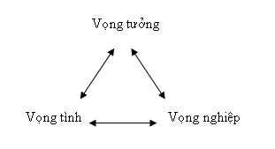

|
Ý, Tình, Thân Thích Trí Siêu 1. Như mọi người Một ngày đầu Xuân năm nào, tôi [1] mang tiếng khóc oa oa chào đời, ngơ ngác trong thế giới loài người. Được cha mẹ thương yêu nuôi nấng, suốt quãng đời ấu thơ, tôi chỉ biết cắp sách đến trường rồi về nhà. Lớn lên lo học lấy bằng cấp để đi làm kiếm ăn. Học xong bằng kỹ sư, tìm được sở làm chắc chắn, tôi nghĩ đến chuyện lập gia đình. Theo tôi đây là tiến trình tự nhiên của mọi người trong xã hội. Nhìn xung quanh anh em, bạn bè ai nấy đều có công ăn việc làm và lập gia đình nên tôi cũng phải mau mau lập gia thất. Khổ thay cái thời gian dễ cặp kè yêu đương nhất là ở học đường, nhưng lúc đó cha me tôi thường nhồi vào đầu tôi là con phải lo học thành tài, đừng có lăng nhăng trai gái, không đi đến đâu rồi thân tàn ma dại. Vì thế tôi lo cặm cụi vào sách vở, không dám ngóc đầu để ý tới các cô, các chị. Bây giờ trong sở làm đâu phải là chỗ đi tìm vợ. Túng thế tôi phải cầu cứu tới bà con bạn bè mách bảo làm mai. Nhờ trời thương, cuối cùng tôi cũng cưới được một cô vợ. Cưới vợ thì cưới như bao nhiêu người chứ thực sự tôi không biết thế nào là tình yêu. Ai làm sao, tôi làm vậy! Hồi xưa lúc còn độc thân tôi chỉ có hai chân. Cưới vợ xong tôi có thêm hai chân nữa là bốn chân. Đáng lý ra có bốn chân thì phải đi nhanh hơn hai chân, nhưng loài người không giống như loài vật khác. Nay có bốn chân nhưng đi đứng lại ngượng ngạo, khó khăn hơn, hai chân muốn đi phía này, hai chân muốn đi chỗ khác, giằng co bên này kéo bên kia. Rồi vợ chồng bắt đầu hục hặc khó chịu với nhau. Thấy thế cha mẹ hai bên khuyên nhủ: thôi ráng có mụn con đi thì vợ chồng sẽ vui vẻ hòa thuận lại với nhau. Là con hiếu thảo, nghe bề trên nói có lý nên chúng tôi đồng ý cho sinh ra một đứa con trai đầu lòng. Và như thế tôi lại có thêm hai chân nữa, tức là sáu chân. Cứ mỗi lần có thêm hai chân là tôi đi đứng chậm hẳn lại. Hồi trước có bốn chân thì giằng co hai chiều, bây giờ có sáu chân thì giằng co ba chiều. Chồng muốn một đàng, vợ muốn một nẻo, con muốn một ngả. Tưởng đâu có con thì gia đình êm ấm, ai dè náo loạn hơn. Đi làm cực nhọc kiếm tiền nuôi vợ con, tưởng họ biết ơn và thương mình hơn, nhưng vợ không bao giờ hài lòng, hết than phiền lại trách móc, còn thằng con hết khóc lại phá. Nhiều lúc chịu hết nổi, đầu óc tôi căng thẳng như sắp nổ phải to tiếng quát tháo. Mỗi lần như vậy vợ tôi lại giận hờn, không thèm nói chuyện cả tuần, còn con thì sợ hãi lánh xa, không khí gia đình trở nên ngột ngạt khó thở. "Phước bất trùng lai, họa vô đơn chí". Kinh tế xã hội xuống dốc, hãng của tôi phải thải nhân viên, không may có tôi ở trong đó. Thế là hôm trước hôm sau tôi trở thành kỹ sư thất nghiệp. Từ lâu tình cảm giữa hai vợ chồng đã không tốt đẹp gì, không ai hiểu ai. Nay tôi thất nghiệp ở nhà, đi ra đi vào chạm mặt nhau lại càng khổ sở khó chịu hơn nữa. Vợ tôi thường kiếm cớ đi ra ngoài để tránh mặt tôi. Bỗng một hôm nàng báo cho tôi một tin sét đánh: nàng đang làm đơn ly dị! Vừa buồn vừa giận, tôi há hốc miệng không nói nên lời, không ngờ nàng tàn nhẫn chơi tôi một vố đau quá! Vài ngày sau, cha mẹ tôi đi nghỉ hè bị tai nạn xe cộ qua đời. Thất nghiệp, vợ bỏ, cha mẹ chết. "Trời ơi! Lúc đó tôi chỉ biết kêu trời mà thôi. Trời ơi! Ông trời có mắt hay không? Sao ông để cho tôi khổ quá vậy nè Trời"! Tôi bị khủng hoảng tinh thần, mất ăn mất ngủ, mặt mày bơ phờ hốc hác đi lang thang bất định trên đường phố, đầu óc như ngây như dại. May thay gặp được thằng bạn cũ, nó kéo tôi vào quán cà phê ngồi nhâm nhi trò chuyện. Hỏi han biết được nỗi khổ của tôi, nó liền rủ tôi đi chùa giải khuây. Sau này tôi mới biết anh ta là một Phật tử thuần thành. Mỗi cuối tuần nó lái xe ngang nhà đón tôi lên chùa, ban đầu chưa quen nên tôi đi theo cho đỡ buồn. Đến chùa tôi vào chánh điện xá chào Phật vài cái qua loa lấy lệ rồi tìm một góc trò chuyện hoặc ngắm nhìn bà con cô bác. Dần dà nó dụ tôi vào nghe thầy thuyết pháp. Trời ơi! (lại kêu trời nữa) từ xưa đến nay tôi cứ nghĩ chùa chiền là chỗ mê tín dị đoan để cho mấy ông bà già đến cúng vái cầu xin, nhưng sau vài lần nghe pháp, tôi thấy thấm thía như được nước cam lồ rót vào tim xoa dịu vết thương lòng. Sau vài tháng tới lui cảnh chùa, tôi xin quy-y tam bảo và bắt đầu tu học. Được thầy giảng đạo Phật là đạo cứu khổ, nguyên nhân của khổ là vô minh và ái dục. Muốn hết khổ thì phải tu, phải sửa, cái gì hư hỏng thì sửa lại cho tốt đẹp. Tu sửa như vậy còn được gọi là chuyển hóa, chuyển phiền não thành bồ đề, khổ đau thành hạnh phúc. Trong cái họa ngầm có cái may, nhờ gặp cảnh khổ thất nghiệp, vợ bỏ, cha mẹ chết, xui xẻo đủ chuyện nên tôi mới có duyên biết đến đạo, chứ nếu không khổ như vậy chắc tôi không bao giờ để ý đến đạo Phật và tiếp tục cho đó là một loại mê tín thờ cúng.
-ooOoo-
2. Đi tìm ý nghĩa Ta từ đâu đến, sinh ra đời để làm gì và chết sẽ đi về đâu? Một người bình dân như tôi sẽ trả lời: "Ta từ bụng mẹ chui ra, sinh ra đời để sống như bao nhiêu người khác và chết thì trở về với cát bụi. Thế là hết cuộc đời!" Mới nghe thấy xuôi tai nhưng thực tế không phải đơn giản như vậy. Sinh ra đời để sống như bao nhiêu người là sao? Là ăn, ngủ, đi làm kiếm tiền nuôi gia đình, lớn tuổi về hưu, già bệnh rồi chết! Ăn ngủ cho sướng cái thân, đi làm kiếm tiền cũng để nuôi thân và nuôi những người thân. Nhìn kỹ một chút thì bản tính tự nhiên của con người là đi tìm sung sướng hạnh phúc, không ai dại gì đi tìm khổ đau. Tôi làm theo bao nhiêu người khác vì tôi tin rằng làm như thế sẽ có hạnh phúc. Trên đời này ai cũng đi tìm hạnh phúc, từ kẻ cùng đinh hạ tiện cho tới quốc vương, tổng thống, ngay cả những người từ bỏ cuộc đời đi tu cũng vì muốn tìm một sự an lạc hạnh phúc chân thật. Cái bản năng đi tìm hạnh phúc này hình như đã có từ kiếp nào rồi. Một đứa trẻ sơ sinh, khi đói nó biết khóc đòi ăn, được mẹ cho bú thì yên ngay. Con nít nào cũng thích kẹo bánh, ngay cả người lớn cũng hảo ngọt, được ai ăn nói dịu dàng khen ngợi thì sung sướng hoan hỷ. Trở lại câu hỏi: Ta từ đâu đến? Sinh ra đời để làm gì? Chết đi về đâu? Câu hỏi đầu và câu hỏi cuối đa số chúng ta không để ý và nhiều lúc không muốn nghĩ tới vì nó có vẻ siêu hình. Nhưng sinh ra đời để làm gì thì chắc bạn sẽ đồng ý với tôi là sinh ra đời để sống và trong lúc sống mọi người đều đi tìm hạnh phúc. Làm sao có được hạnh phúc? Trở lại câu chuyện hồi nãy, tôi nghĩ rằng khi có được bằng kỹ sư thì tôi sẽ hạnh phúc. Nhưng khi đậu xong bằng kỹ sư tôi chỉ sung sướng được hai ngày rồi hết. Sau đó tôi nghĩ chuyện đi kiếm việc làm. Có việc làm rồi tôi nghĩ đến chuyện cưới vợ để xây dựng mái ấm hạnh phúc. Nhưng sống với vợ một thời gian không thấy hạnh phúc, tôi nghĩ nếu có con thì chắc sẽ đem lại hạnh phúc. Có con rồi thì ôi thôi, còn tệ hơn nữa! Cuối cùng hạnh phúc đâu không thấy mà thấy toàn chuyện buồn phiền, thất vọng. Nhưng còn may cho tôi là gặp được bạn lành biết đạo, cứu tôi ra khỏi cơn khủng hoảng. Trong xã hội hiện nay có rất nhiều người lâm vào hoàn cảnh như tôi và họ xuống dốc luôn, rơi vào nghiện ngập, rượu chè, hút sách hoặc tự tử. Đi tìm hạnh phúc mà chỉ thấy khổ đau! Cuộc đời thật là oái ăm! Nói vậy thì hơi oan cho đời, vì oái ăm hay không là do mình tạo chứ không phải tại người hay hoàn cảnh bên ngoài. Vì không hiểu biết (vô minh) nên ta lầm tạo nghiệp xấu và phải lãnh chịu quả khổ. Muốn hết khổ thì phải học hỏi và tu sửa.
-ooOoo-
3. Tu cái gì? Khi được hỏi: Anh tu cái gì? Đa số thường trả lời: "Tôi tu Thiền hoặc tu Tịnh Độ". Theo nghĩa đen, tu có nghĩa là sửa, như thế thì tu Thiền là sửa Thiền, tu Tịnh Độ là sửa Tịnh Độ. Nhưng Thiền và Tịnh Độ đâu có gì cần phải sửa vì đó là những pháp môn của Phật để lại. Nếu vậy bạn sẽ đáp: "Tôi tu theo pháp môn Thiền, hoặc tu theo pháp môn Tịnh Độ". Nói như thế rõ nghĩa hơn nhưng vẫn chưa trả lời "tu cái gì". Tu cái gì tức là sửa cái gì? Bạn sửa cái gì theo pháp môn Thiền, sửa cái gì theo pháp môn Tịnh Độ? Bạn chọn theo những pháp môn đó để sửa cái gì ? Tôi có tánh tham lam, nóng giận, lo sợ, những tánh này làm tôi khổ sở, bất an. Tôi tu để sửa những tánh xấu này (tu tâm sửa tánh). Do đó nếu được hỏi tu cái gì thì tôi sẽ đáp là tôi tu tánh tham, tu tánh sân, tu tánh sợ. Tu chuyển hay diệt? Có người nghĩ tu là phải diệt trừ (đoạn) phiền não. Người khác lại quan niệm tu là chuyển phiền não thành bồ đề. Hãy lấy thí dụ về mưa. Khi sắp mưa, mây đen kéo đến phủ đầy trời rồi sấm sét nổi lên và cơn mưa bắt đầu trút xuống. Tạnh mưa bầu trời trở lại quang đãng không còn một bóng mây đen. Như thế ta có thể nói mây đen đã biến mất (hay được diệt trừ). Nhưng thật ra mây đen đã chuyển thành nước mưa rơi xuống đất. Sau cơn mưa, ánh nắng chiếu soi, những vũng nước mưa kia sau vài giờ lại biến mất. Nhưng kỳ thật những vũng nước đó đã chuyển thành hơi bay lên không trung tụ lại thành mây. Khi phiền não không còn thì ta nói phiền não đã được diệt trừ, nhưng theo tinh thần Đại Thừa thì phiền não đã chuyển thành bồ đề. Vì thế trong Duy Thức học có một danh từ gọi là Chuyển Y, có nghĩa là khi tất cả những chủng tử được chuyển từ bất tịnh thành tịnh rồi thì A Lại Gia Thức chuyển thành Bạch Tịnh Thức hay Đại Viên Cảnh Trí. Và khi đó chúng sinh kia trở thành Phật, thái tử Siddharta chuyển thành Phật Thích Ca. Tu chạy trốn Tu là sửa và cũng có nghĩa là chuyển. Muốn vậy phải có trí huệ, trí huệ giống như mặt trời, phiền não giống như sương mù và mây đen. Khi mặt trời mọc thì sương mù, mây đen đều tan biến. Nơi nào có ánh sáng thì bóng tối không thể hiện hữu. Chư Bồ Tát nhờ có trí huệ nên ra vào sinh tử độ sinh không mệt mỏi chán nản (vô quái ngại), không có sợ hãi (vô hữu khủng bố). Nhưng có người lại tưởng tu là tránh né cuộc đời, chạy trốn phiền não nên họ tìm một chỗ yên thân sống qua ngày, không muốn ai quấy rầy. Ban đầu tu hành rất cần thầy lành bạn tốt, cần một hoàn cảnh thuận tiện, một nơi yên ổn thanh tịnh nhưng đó là thời gian đầu để tập luyện tu tâm sửa tánh chứ không phải để chạy trốn. Sau một thời gian tu học, ta cần phải đối diện tiếp xúc với cuộc đời để quán chiếu phát triển trí huệ, khai mở tâm từ bi. Hoa sen không thể nở trong lâu đài cẩm thạch mà mọc ở trong ao bùn. Phương tiện và mục đích Mục đích của tu là sửa những tánh xấu (phiền não) cho nên ta cần những phương tiện pháp môn như Thiền, Tịnh, Mật, tụng kinh, trì chú, v.v... Nhưng nhiều người hay lầm lẫn giữa phương tiện và mục đích (cứu cánh), họ nghĩ tu là phải ngồi thiền, hoặc niệm Phật, tụng kinh, trì chú cho nhiều. Tu như vậy gọi là tu luyện. Luyện tức là làm tới làm lui, làm thật nhiều cho quen giống như luyện võ, một thế võ được tập dợt cả trăm lần suốt ngày cho thuần thục. Dĩ nhiên tu cần phải luyện, nhưng sự luyện tập đó phải có ích lợi và hiệu quả. Sau một thời gian tu luyện ta phải thấy tánh xấu giảm đi và tánh tốt tăng trưởng. Ngược lại nếu tu luyện nhiều mà tánh xấu không bớt thì phải kiểm lại pháp môn có thích hợp không? Mải lo luyện pháp môn mà không nghĩ tới sửa tánh thì không phải là tu. Có người chuyên trì chú Đại Bi, tụng mấy trăm biến một ngày, tụng đến nỗi hết hơi kiệt sức và cho đó là tu. Đây là luyện chú Đại Bi giống như trường hợp thiền sư Từ Đạo Hạnh[2] nhập thất luyện chú Đại Bi để có phép trở về đánh pháp sư Đại Điên trả thù cho cha. Sau khi giết được Đại Điên, Từ Đạo Hạnh mới ăn năn và bỏ đi tu thực sự. Phương tiện là trì Đại Bi mà mục đích là để giết người. Tất cả thần chú (mantra) hay đà la ni (dharani) đều xuất phát từ Kinh, chúng ta không học kinh để hiểu nghĩa tu hành mà muốn tu tắt, lấy riêng những bài chú làm thành khóa tụng, biến pháp tu thành một việc thần quyền. Thần chú linh thiêng bất khả tư nghì nhưng phải được áp dụng một cách thông minh đúng đắn, ta phải tu tâm sửa tánh thì tha lực của thần chú mới giúp ta mau thành tựu. Hành giả mật tông Tây Tạng trước khi tu luyện một pháp quán tưởng nào đều phải đầy đủ ba điều: phát bồ đề tâm, xa lìa tham lam chấp ngã, và hiểu rõ tánh Không[3]. Nếu không đầy đủ ba điều trên thì dù tu luyện có thần thông phép tắc cũng thành ma đạo. Có người chuyên trì tụng kinh Pháp Hoa và cho đó là tu. Trì tụng nhiều như thiền sư Pháp Đạt nhưng tâm ngã mạn đảnh lễ Lục tổ Huệ Năng đầu không chấm đất, hoặc "một ni cô tụng kinh Pháp Hoa 30 năm, nhưng tâm chưa dứt niệm sắc thinh nên kiếp sau đọa làm thân ca kỹ, tiếng thanh sắc đẹp thường bay ra mùi thơm như hoa sen"[4]. Trì tụng kinh chú là tụng để lời kinh thâm nhập vào tâm nhưng đó chưa phải là hành. Trì tụng là bước đầu, kế tiếp phải thực hành theo lời kinh để tu sửa. Trì Đại Bi mà không sống từ, bi, hỷ, xả; tụng Pháp Hoa mà không hiểu và sống với tinh thần Pháp Hoa, đó không phải tu theo nghĩa sửa mà là luyện với tâm mong cầu sở đắc. Càng niệm Phật, tâm ta càng thanh tịnh vắng lặng không bị phiền não xao xuyến thì nên niệm nhiều hơn. Càng tụng kinh ta càng hiểu đạo, bớt chấp trước đắm nhiễm cuộc đời thì nên tụng nhiều hơn. Nhưng nếu nghe thầy dạy tụng nhiều, tâm ta không hoan hỷ, càng tụng càng mệt, càng khó chịu thì nên xin thầy một pháp môn khác thích hợp với căn cơ và thể tạng của mình. Kinh chú hay pháp môn giúp ta tu sửa chứ không phải để nhồi sọ hay luyện phép. "Như Lai thuyết pháp như chiếc bè để qua sông chứ không phải để đội lên đầu hay vác trên vai mà đi[5]".
-ooOoo-
4. Ý Tình Thân Bình thường các triết gia hay đặt câu hỏi Ta là ai? Ở đây chúng ta đặt lại câu hỏi Ta là gì? Và đi xa hơn nữa, Ta làm gì? Theo đạo Phật cái Ta không có thật mà chỉ là một ảo tưởng, một giả danh được đặt trên năm uẩn (xem Vô ngã[6]). Trong năm uẩn (sắc, thọ, tưởng, hành, thức), sắc thuộc về sắc thân, còn bốn uẩn kia thuộc về tâm. Tâm chỉ có tên mà không có hình tướng nên gọi là danh (nama). Trên giáo lý con người chỉ là danh-sắc (nama-rupa) không hơn không kém, nhưng ở đây tôi đứng trên phương diện tương đối của thế gian, tạm lấy những quan niệm của người đời mà nói chuyện, trong nhà Phật gọi đó là "thế giới tất đàn", một trong Tứ Tất Đàn[7] (catvari siddhanta), tức là bốn tiêu chuẩn để trình bày sự thật. Con người là một loài hữu tình, tiếng Phạn là sattva, tức là có tình cảm. Vì có tình cảm nên mới có phiền não. Sau đây là một thí dụ về tiến trình của tình cảm. Trong một bữa tiệc ăn uống với bạn bè, tôi để ý thấy cô Tám là người hoạt bát, ăn nói vui vẻ có duyên. Về nhà, hình ảnh của cô Tám cứ lởn vởn hiện ra trong đầu óc tôi. Nếu tôi chỉ có Ý nhớ, nghĩ, tưởng về cô Tám thôi rồi chấm dứt ở đó thì không có chuyện gì đáng nói. Nhưng sau khi nhớ, nghĩ, tưởng về cô Tám thì trong tôi nảy sinh ra một thứ tình, đó là ưa mến. Khi Ý nhớ lại những điệu bộ, cử chỉ ăn nói duyên dáng của cô Tám thì (Tình) tôi lại càng ưa mến cô ấy! Khi Tình ưa mến thì nó khiến cho Ý phải suy nghĩ đủ mội cách để làm quen và gần gũi. Sau khi nặn đầu bóp trán với trăm mưu ngàn kế thì Ý nghĩ ra được một cách. Và muốn thực hiện cách đó thì Ý phải nhờ đến Thân và Khẩu. Thân phải tìm đến nhà cô Tám để Khẩu nói chuyện tỏ Tình. Trong nhà Phật thường nói đến bộ ba "Thân, Khẩu, Ý", gọi là tam nghiệp vì đó là ba cánh cửa tạo nghiệp. Nay có thêm Tình là một yếu tố quan trọng không kém trong vấn đề tạo nghiệp nên cần được thêm vào. Để đơn giản hóa vấn đề, tôi sẽ giữ con số ba, nghĩa là xếp Khẩu và Thân lại làm một vì khẩu là một phần của thân thể. Như vậy chúng ta sẽ có một bộ ba mới là Ý, Tình, Thân. Hằng ngày mỗi khi Ý suy nghĩ, nhớ tưởng thì ta cho là Ta suy nghĩ, nhớ tưởng. Khi Tình yêu ghét, vui buồn thì ta cho là Ta yêu ghét, vui buồn. Khi Thân đi đứng, cử động, nói năng, làm việc thì ta cho là Ta đi đứng, cử động, nói năng, làm việc. Nói cách khác, tất cả chúng ta đều vô tình công nhận Ý, Tình, Thân chính là Ta, là mình. Vì thế nên tôi tạm gọi ba anh này là Ba Mình, Ba Mình cần được hiểu là ba cái mà chúng ta tin và tưởng đó là ta, là mình. Theo thế gian, ta có thể nói con người là một tổng hợp của Ý, Tình, Thân. 1/ Thế nào là ý tình thân? a) Ý: là ý thức hay tâm ý, tức khả năng nhận thức, hiểu biết, phân biệt, suy tư, nghĩ tưởng, v.v... b) Tình: là tất cả những tình cảm mà ta cảm nhận được như: vui, buồn, yêu, ghét, giận, hờn, đam mê, lo sợ, ghen tức, v.v... c) Thân: là những gì thuộc về thân thể như cử chỉ, nói năng, hành động và thái độ. Ba cái này luôn đi chung và liên quan rất mật thiết với nhau. Xưa nay vấn đề Tình hay tình cảm không được đề cập tới vì người ta xem nó thuộc về tâm hay tâm sở, nhưng nay tôi lọc nó ra thành một phần riêng vì nó có một tác dụng đặc biệt và quan trọng trong đời sống con người. Tâm là một danh từ bao quát. Trong ngũ uẩn thì sắc uẩn thuộc về thân còn bốn uẩn kia: thọ, tưởng, hành, thức thuộc về tâm. Ý thức, Mạt Na thức và A lại Da thức cũng thuộc về tâm. Đương nhiên ở đây Ý và Tình cũng thuộc về tâm, nhưng mỗi cái có công năng khác nhau. Khi sự vật xảy ra theo Ý của tôi (vì tôi cho ý kiến của tôi đúng) thì Tình của tôi vui mừng, hân hoan sung sướng, và Thân của tôi thoải mái, nhẹ nhàng, dễ chịu ... Nhưng khi sự vật xảy ra trái Ý tôi thì Tình của tôi buồn bực, giận hờn, lo âu và Thân của tôi sinh ra bệnh hoạn, hốc hác, mệt mỏi, ... Khi cô Tám làm đúng như Ý tôi muốn thì tự nhiên tôi có cảm tình và sẽ có một thái độ dễ thương, cởi mở và thân thiện với cô ấy. Khi anh Bảy làm trái Ý tôi thì tôi mất cảm tình với anh và từ đó tôi sẽ có những cử chỉ, thái độ lạnh lùng, xa lạ, thù ghét. Khi những đứa con của tôi nghe lời và làm đúng ý tôi thì tôi thấy chúng nó rất dễ thương, nhưng khi chúng không nghe lời và làm trái ý tôi thì tôi buồn giận và thấy chúng khó thương. Qua thí dụ về cô Tám ở trên, ta thấy vì tâm ý có những suy nghĩ, nhớ tưởng như vậy nên mới đưa đến tình cảm như vậy. Vì có tình cảm như vậy nên mới sinh ra cử chỉ và thái độ như vậy. Ý nghĩ → Tình cảm → Thái độ Đây là đi theo chiều Ý, Tình, Thân.
Tôi nghĩ rằng vào chùa là mình phải lịch sự dễ thương. Vì (ý) nghĩ như thế nên mỗi khi gặp ai trong chùa là (thân) tôi đều mỉm cười chắp tay cúi đầu chào. Trong chùa có cô Sáu hay đến lễ Phật, mỗi khi thấy tôi làm như thế, cô ta cũng mỉm cười chắp tay đáp lại. Qua sự mỉm cười chắp tay chào qua chào lại như thế mà tôi và cô Sáu nảy sinh thiện cảm với nhau. Vì nghĩ như vậy nên tôi mới làm như vậy. Vì làm như vậy nên sinh ra tình cảm như vậy. Ý nghĩ → Thái độ → Tình cảm Đây là đi theo chiều Ý, Thân, Tình.
Dù đi theo chiều nào đi nữa, một khi cái bánh xe Ba Mình (Ý,Tình, Thân) này bắt đầu chuyển (cái này sinh ra cái kia) thì nó sẽ tự động quay tiếp và gây ra hạnh phúc hay khổ đau. 2/ Vấn đề trục trặc Bình thường nếu cái bánh xe Ba Mình này quay đều đặn thì không có gì khổ hết! Nhưng thực tế nó luôn luôn có vấn đề trục trặc, không quay suông sẻ được. Xin lấy vài thí dụ để hiểu. Ý và Tình không tương ưng Sau khi chào qua chào lại, tôi và cô Sáu thấy mến nhau. Tôi bắt đầu chú ý đến cô ta nhiều hơn. Nhờ thế tôi biết được cô ấy hay đi chùa vào ngày rằm và mồng một. Do đó tôi cố gắng đến chùa vào những ngày này để có dịp gặp và làm quen với cô Sáu. Ý tôi nghĩ như vậy nên Tình của tôi chớm nở hy vọng. Nhưng qua vài lần nói chuyện, tôi khám phá ra cô Sáu đã có người yêu và sắp làm đám cưới! Tim tôi bỗng se thắt lại và đầu tôi choáng váng. Về nhà ý thức tôi làm việc như chong chóng, tôi thấy mình không thể yêu được, vì ý tôi không cho phép tôi yêu cô nữa. Nhưng con tim (tình) của tôi nó cứ muốn yêu cô ta. Ngạn ngữ Pháp có câu: "Con tim có những lý do của nó mà lý trí không thể biết được" (le coeur a ses raisons que la raison ne connait point, Blaise Pascal). Đến đây Ý (lý trí) và Tình (cảm) bắt đầu xung đột dữ dội làm tôi mất ăn mất ngủ, Thân thể mệt mỏi, hốc hác, thật là khổ sở! Theo quan niệm bình dân, ý (lý trí) nằm ở trong đầu, còn tình cảm nằm ở trong tim hay trong lòng. Bởi vậy khi thất tình, người ta hay biểu lộ nó qua hình vẽ "con tim rướm máu". Khi ý và tình (hay đầu và tim) đi đôi với nhau thì mọi sự an ổn. Khi ý và tình đi ngược thì sinh ra giằng co khổ sở. Thương yêu không đúng chỗ thì người đời chửi rủa, lên án và mình sẽ mang mặc cảm tội lỗi. Nhưng nếu hy sinh tình cảm để theo lý trí thì tim sẽ mang một vết thương lòng. Trong ba anh, Ý được xem như anh cả, Tình là anh thứ hai, còn Thân là em út. Ý và Tình thường hay chống trái nhau, còn Thân thì dễ dãi nghe lời hai anh, sai đâu làm đó, nhưng nhiều khi nó cũng cứng đầu khó dạy. Ý và Thân không tương ưng Hồi nhỏ khi mới được sinh ra tôi đâu có biết uống rượu hút thuốc là gì. Sau này lớn lên giao du với bạn bè, rủ nhau hút thuốc uống rượu. Ban đầu chỉ hút vài điếu, uống vài ly cho vui rồi từ từ sinh ra nghiện ngập. Đến khi nghiện rồi thì không thể bỏ được, ngày nào cũng phải ít nhất hai bao thuốc lá và một chai rượu. Gần đây nhờ bà con họ hàng nhắc nhở, (ý thức) tôi biết rõ hút thuốc làm hại phổi, uống rượu hại gan, có thể lao phổi hoặc viêm xơ gan. Nhưng đến giờ mà không có thuốc và rượu thì tay chân tôi bủn rủn, cổ khô miệng đắng, bao tử cào cấu, toàn thân yếu lả, không làm ăn gì được. Thân thể tôi không chịu nghe lời ý (lý trí) tôi nữa. Ý muốn cai rượu cai thuốc nhưng thân thể chống lại không theo. Người nào cai được thì xem như Ý thắng, còn không cai được thì Thân thắng thế. Tình và Thân không tương ưng Trong lớp học có cô Linda người Mỹ rất đẹp làm tôi say mê để ý. Nhưng cô ta có tánh kỳ thị, không ưa người da vàng. Vì thân tôi là người da vàng nên tình của tôi không thành! Tình muốn nhưng tại Thân nên sự không thành. Trên đây là vài thí dụ về sự chống trái giữa Ba Mình (Ý, Tình, Thân). Nhưng không cần phải chờ đến khi Ba Mình chống trái mới sinh chuyện. Nhiều khi chúng đồng ý hợp tác với nhau cũng đưa đến đau khổ như thường. Khi Ý có những ý nghĩ đen tối, cho rằng ai cũng ghét mình, nói xấu mình thì làm sao Tình vui cho được. Lúc đó Tình sinh ra buồn bực, âu sầu, rồi từ từ Thân xa lánh không muốn tiếp xúc với mọi người. Khi thấy mình xa lánh, buồn bực, khó chịu thì đâu ai dám lại gần nói chuyện vui vẻ. Và như thế (tình) mình lại buồn thêm và Ý tin chắc là người đời xấu ác. Ý đen tối nuôi dưỡng Tình sầu, làm Thân thể héo mòn. Thân thể héo mòn trở lại nuôi dưỡng Tình sầu và làm cho Ý càng thêm đen tối. Đây là cái vòng lẩn quẩn của cuộc đời. Từ cái khổ này đưa đến cái khổ khác (gọi là Khổ Khổ) khó mà thoát ra được. * Tại sao bánh xe Ba Mình không ngừng quay cho ta đỡ khổ? Ba Mình không thể ngưng làm việc được. Nếu muốn nó ngưng thì ta phải làm cho Ý ngừng trước rồi từ từ Tình và Thân sẽ ngưng sau. Nếu muốn cho Ý ngừng thì có ba cách: 1) Ngồi thiền nhập định, không khởi một ý niệm, ý nghĩ, ý tưởng. 2) Ngủ không mơ. Nếu ngủ mà mơ thì trong giấc mơ Ý thức vẫn làm việc, trong Duy Thức Học gọi là "mộng trung ý thức". Thí dụ trong mơ thấy ma quỷ rượt bắt thì hoảng sợ, tim đập mạnh, người toát mồ hôi. 3) Bất tỉnh nhân sự hoặc rơi vào coma. Ba cách trên không phải dễ thực hiện: 1- Đa số chúng ta không phải là hành giả Du Già (Yogi) hay thiền sư nên khó mà nhập định (samadhi) dứt bặt tâm ý được. 2- Ngủ không mơ có thể được, nhưng chẳng lẽ ta cứ nằm ngủ suốt ngày suốt đêm sao? 3- Bất tỉnh nhân sự hoặc coma thì chắc chúng ta không muốn, mà muốn cũng khó làm. Động cơ khiến cho Ba Mình làm việc không ngừng chính là nghiệp lực. Mà nghiệp lực đâu phải mới có đây, nó đã có từ đời nào rồi, trước khi ta được sinh ra trong kiếp này. Bình tâm nhìn lại, Ba Mình không phải lúc nào cũng làm cho ta khổ đau. Khi Ba Mình (Ý, Tình, Thân) làm việc hòa thuận với nhau thì nó cũng cho ta hạnh phúc, dù hạnh phúc đó phù du tạm bợ.
-ooOoo-
5. Phiền não
1/ Đi tìm phiền não Tham, sân, si được xem là ba phiền não lớn nhất của chúng sinh. Trong các sách phổ thông thường nêu ra 10 thứ phiền não, đó là: tham, sân, si, mạn, nghi, thân kiến, biên kiến, tà kiến, kiến thủ, giới cấm thủ. Tuy nhiên phiền não còn được chia ra nhiều loại tùy theo Kinh Luận khác nhau. Phiền não được dịch từ Kilesa (pali) hoặc Klesa (sanskrit), có nghĩa là những tính bất thiện (akusala), theo Thanh Tịnh Đạo luận gồm có 10[8]: tham (lobha), sân (dosa), si (moha), mạn (mana), tà kiến (ditthi), nghi (vicikiccha), hôn trầm (thina), trạo cử (uddhacca), vô tàm (ahirika), vô quí (anottappa). Ngoài chữ phiền não, ta còn có chữ nội kết hay kiết sử (samyojana) cũng gồm có 10: thân kiến (sakkaya-ditthi), nghi (vicikiccha), giới cấm thủ (silabbata-paramasa), tham dục (kama-raga), sân hận (vyapada), tham sắc (rupa-raga), tham vô sắc (arupa-raga), mạn (mana), trạo cử (uddhacca), vô minh (avijja). Gọi là kiết sử vì các tánh xấu này trói buộc sai sử ta trong sinh tử, gọi là nội kết vì nó kết tụ lại trong tâm hay trong con người của ta. Trong 51 tâm sở của Duy Thức Học[9] có nói về 6 căn bản phiền não (mulaklesa) và 20 tùy phiền não (upaklesa). Sáu căn bản phiền não: tham, sân, si, mạn, nghi, ác kiến. Hai mươi tùy phiền não: phẫn, hận, phú, não, tật, xan, cuống, siểm, hại, kiêu, vô tàm, vô quí, trạo cử, hôn trầm, bất tín, giải đãi, phóng dật, thất niệm, tán loạn, bất chánh tri. Theo Câu Xá Luận (Abhidharmakosasastra), do ngài Thế Thân (Vasubhandhu) trước tác khi còn theo Tiểu Thừa[10], gồm có 46 tâm sở, trong đó có[11]: Sáu căn bản phiền não: vô minh, phóng dật, giải đãi, bất tín, hôn trầm, trạo hối. Hai đại bất thiện: vô tàm, vô quí. Mười tiểu phiền não: phẫn, hận, phú, não, tật, xan, cuống, siểm, hại, kiêu. Trên đây tạm gọi là đi tìm phiền não trong Kinh Luận. Ta thấy sự phân chia và sắp xếp các phiền não không giống nhau, nó tùy thuộc vào quan điểm của các luận sư thời xưa, và tùy theo giáo lý Nguyên Thủy hay Đại Thừa. Ngoài ra có vài tâm sở rất quen thuộc của đời sống hàng ngày mà Duy Thức Học đã bỏ quên như: - từ, bi, hỷ, lạc: có thể thêm vào trong 11 tâm sở thiện. - ái (yêu), ố (ghét), ai (buồn), ưu (lo), khủng (sợ): có thể thêm vào 20 tùy phiền não. Phiền não là một danh từ đặc biệt của đạo Phật và trở thành quen thuộc đối với người Phật tử, nhưng khi muốn phân tách đó là gì thì không phải chuyện dễ cho những ai không có khái niệm về tâm lý học Phật giáo như Duy Thức hoặc A Tỳ Đàm. Qua vài định nghĩa của Kinh Luận thì phiền não là những tâm sở bất thiện, thuộc hành uẩn, nhưng đối với người bình thường như bạn và tôi thì phiền não được hiểu là những cảm giác buồn bực, khó chịu, bất an, lo sợ, ganh ghét, chán nản, bất mãn, v.v... thuộc thọ uẩn. Đứng trên danh-sắc (nama-rupa) hay thân tâm thì hành uẩn và thọ uẩn đều thuộc về danh hay tâm, nhưng trên tác dụng thì hai cái có sự khác biệt. Bình thường chúng ta nói tâm tham, tâm sân, và xem tham, sân là hai phiền não thuộc về tâm, điều này cũng đúng. Nhưng nếu nhìn kỹ, ta sẽ thấy là do Ý nghĩ gì mới khiến lòng tham nổi lên, Ý nghĩ gì mới khiến lòng sân nổi lên. Tham và sân không thể tự nhiên khởi lên được. Chữ tâm (citta) theo tiếng Hán có nghĩa là tim hay lòng và nhiều khi nó cũng được hiểu là Ý. Do đó tâm thường mang hai nghĩa: Ý và Tình (tâm ý và tâm tình). Tim hay lòng chính là Tình. Từ sự phân tách trên, tôi xếp những ý nghĩ (hay tư tưởng) bất thiện vào Ý, và những cảm giác bất thiện (tức phiền não) vào Tình. Bởi vì tôi nghĩ xấu anh Ba, cho rằng anh nói xỏ và chửi xéo tôi nên tôi mới nổi giận. Mỗi khi Ý có những ý nghĩ bất thiện thì đương nhiên làm phát sinh ra cảm giác (Tình) buồn phiền. Do đây tôi xem phiền não thuộc về Tình, còn nguyên nhân gây ra phiền não thuộc về Ý. 2/ Phiền não từ đâu đến? Mỗi khi bị phiền não, khổ đau, chúng ta có thói quen đổ lỗi cho người và sự vật bên ngoài. Tôi[12] buồn khổ vì người đời ác độc, tham lam, ích kỷ! Chủ đuổi tôi, vợ con hất hủi, bạn bè khinh chê, v.v... Tôi vô tội, đâu có làm gì ác! Chính những người khác làm tôi khổ. Tôi chỉ là một nạn nhân đáng thương xót! Sau khi học Đạo, tôi hiểu được mọi khổ đau xảy đến đều do mình tạo chứ không phải tại người khác. Vì không biết cách sống, không biết kiểm soát ba nghiệp (thân, khẩu, ý) nên tôi đã làm những hành động đưa đến khổ đau. Trong ba nghiệp thì Ý dẫn đầu. Kinh Pháp Cú[13] (Dhammapada), phẩm Song Yếu (Yamaka Vagga) có nói: Ý
dẫn đầu các pháp Ý
dẫn đầu các pháp Tại vô minh hay ái dục? Trong Kinh Bảo Tích (Ratnakuta) có kể một ví dụ: một người cầm cục gạch ném vào con chó. Bị trúng gạch đau quá, con chó liền rượt theo cục gạch sủa tức tối. Con chó không biết thủ phạm làm cho nó đau không phải là cục gạch mà là người ném gạch. Cũng vậy cái làm cho ta đau khổ không phải sự vật bên ngoài mà là sự vô minh của ta. Vô minh có nghĩa là không sáng suốt, không hiểu biết. Nhưng không hiểu biết cái gì? Trong kinh dạy đó là sự không thấu hiểu về tính cách vô thường, vô ngã và duyên sinh của sự vật. Do không hiểu nên mới tham đắm, ưa thích và vì vậy nên bị trói buộc. Ở đây tôi đi xa hơn một chút và hỏi tiếp là Ai vô minh hay cái gì không hiểu biết? Đức Phật dạy Vô Ngã mà tại sao tôi cứ hỏi Ai hoài? Con người được cấu tạo bởi năm uẩn (sắc, thọ, tưởng, hành, thức), nói gọn hơn là danh sắc hay thân tâm. Thân thể có hình sắc, còn tâm chỉ có tên gọi (danh). Theo Duy Thức Học, tâm gồm có tám thức, trong đó Ý thức được xem là chủ nhân tác nghiệp. Do đó nếu hỏi Ai vô minh thì ta có thể trả lời là Ý vô minh. Ở đây muốn đơn giản hóa vấn đề mà nói như vậy chứ sự thật phức tạp hơn nhiều. Ý thức không thể độc lập tự tung tự tác mà phải cộng tác với 51 tâm sở và những chủng tử hiện hành từ A Lại Gia Thức. Trở lại câu hỏi đau khổ tại vô minh hay tại ái dục? Ta có thể đáp là: tại vì Ý vô minh nên mới sinh ra ái dục dẫn đến khổ đau. Trong mười hai nhân duyên, vô minh được xếp hàng đầu và ái đứng hàng thứ tám. Vô minh Muốn định nghĩa vô minh (avijja hay avidya) là gì không phải chuyện dễ. Vì mỗi truyền thống, mỗi trường phái đều có sự định nghĩa riêng. Thí dụ: Theo Nguyên Thủy, vô minh là không biết luật nhân quả, Tứ Đế, 12 nhân duyên. Theo Đại Thừa, vô minh là không nhận ra được thật tánh của các pháp. Theo Thiền tông, vô minh là không biết ông chủ, bản lai diện mục, chân tâm. Theo Kinh Kim Cang, chấp vào sắc tướng âm thanh là vô minh. Theo Kinh Lăng Nghiêm, bất giác không ngộ được bản tâm chân không diệu hữu là vô minh. Theo Kinh Bát Nhã, không biết Tánh Không của các pháp là vô minh. Theo Kinh Pháp Hoa và Niết Bàn, không nhận ra được Phật tánh là vô minh. Theo Duy Thức, chấp các pháp hiện hữu ngoài thức là vô minh, v.v... Từ những định nghĩa khác nhau ở trên, ta có thể rút tỉa đại ý như sau: Vô minh là không biết luật duyên sinh, không nhận ra thật tánh của các pháp, nên chấp vào sắc tướng và các pháp hiện hữu bên ngoài. Cái gì không biết? Chính cái Ý không biết nên gọi là vô minh. Vì vô minh nên không nhận ra các pháp đều như mộng, như huyễn, bào, ảnh, và từ đó sinh ra suy nghĩ sai lầm, chấp ngã, chấp pháp. Chấp ngã là tin và bám víu vào một cái Ta, từ đó đưa đến bám víu vào những cái liên quan đến Ta (ngã sở) như: vợ ta, con ta, nhà ta, tài sản của ta, danh dự của ta, v.v... Chấp pháp là bám víu vào mọi sự vật trên đời, cho rằng chúng hiện hữu thực sự như: nhà cửa, xe cộ, tiền bạc, danh lợi, đồ đạc, sông núi, cỏ cây, người vật, v.v... Nhưng bám víu vào một cái Ta và sự vật đâu có gì sai quấy? Dưới mắt thế gian thì không có gì sai quấy, ngược lại cần phải bám víu thì mới gọi là người khôn. Nhưng theo lý Đạo, cái Ta và sự vật (các pháp) không có thật, vì do nhân duyên giả hợp, vô thường, vô ngã, không hiện hữu thực sự nên không thể nắm bắt hay bám víu. Cứ muốn nắm bắt cái không thật có thì không phải vô minh là gì? Thí dụ: Đi trong sa mạc, dưới ánh nắng như thiêu như đốt, bao nhiêu nước uống đã cạn. Ta lần mò đi tìm một nơi nào có nước. Nhìn xa xa ta thấy hình như có một ao nước ở phía trước nhưng khi lại gần thì chẳng thấy gì cả. Đó chỉ là ảo ảnh sóng nắng, do ánh nắng mặt trời và sự phản chiếu của cát tạo ra. Vì quá khát nước, ta lại lên đường hy vọng tìm thấy một ao nước nào khác và lại bị thất vọng. Cái Ta và các pháp cũng hiện hữu như sóng nắng, thấy hình như có mà không thật có. Khi đủ duyên thì chúng ảnh hiện như có, thiếu duyên thì chúng tan biến. Vì không biết như thế nên mới bám víu, nắm giữ làm của mình, đến khi nó tuột khỏi tầm tay thì buồn tủi, thất vọng, than khóc. Ái dục Ái có nghĩa là yêu hay ưa thích, dục là ham muốn. Ái dục không thể tự nhiên phát sinh. Ta không thể tự nhiên yêu ai hay thích ai nếu chưa bao giờ gặp hay tiếp xúc với người đó. Do sự tiếp xúc (sparsa, contact) mà ái dục (tanha) phát sinh. Mắt thấy sắc đẹp mới khởi lòng yêu mến, tai nghe âm thanh dịu dàng mới thích, mữi ngửi mùi hương thơm mới ưa, miệng nếm vị ngon mới thèm, thân thể xúc chạm cảm giác khoái lạc mới nhớ thương. Khi sáu giác quan tiếp xúc với người hay vật bên ngoài gây ra những cảm thọ dễ chịu thì phát sinh sự yêu thích (ái). Khi lục căn tiếp xúc với lục trần gây ra cảm thọ khó chịu thì phát sinh sự chán ghét (ố). Yêu hay ghét đều thuộc về Tình cảm. Khi yêu thì ta muốn bám giữ, chiếm hữu; khi ghét thì ta muốn xua đuổi, tiêu diệt. Từ đó trong tâm sinh ra đủ loại tình cảm xung đột, phiền não. Trong vòng 12 nhân duyên (vô minh, hành, thức, danh sắc, lục nhập, xúc, thọ, ái, thủ, hữu, sinh, lão tử) thì thọ và ái (thuộc về Tình) là nơi phiền não hiển lộ hay biểu hiện. Vô minh, hành, thức (thuộc về Ý) là nguồn gốc gây ra phiền não. Theo Ý mình Theo giáo lý, nguyên nhân sinh ra phiền não đúng là vô minh và ái dục như đã phân tách ở trên. Nhưng trong đời sống hàng ngày, ta có thể tìm thấy nguyên nhân của phiền não một cách giản dị, không cần phải có nhiều kiến thức phật học với những danh từ chuyên môn. Thí dụ: Sau một thời gian lân la làm quen với cô Tám, cuối cùng tôi cũng cưới được cô ta làm vợ. Mừng rỡ tôi nghĩ mình sẽ có hạnh phúc. Nhưng chỉ sau vài tháng, tôi nhận ra hai vợ chồng có nhiều ý kiến và ý thích xung khắc. Người nào cũng cho mình đúng và muốn người kia phải thuận theo mình. Mới đầu còn nhường nhịn nhưng từ từ không ai nhường ai, sinh ra cãi lộn rồi giận nhau. Ít lâu sau vì nhu cầu phật sự tại địa phương có một thầy về kêu gọi Phật tử đóng góp xây chùa. Khi chùa lập xong thì chúng tôi dắt nhau tới làm công quả. Ban đầu chân ướt chân ráo vô chùa, ai sai bảo việc gì chúng tôi cũng làm hết, không dám chống trái. Bà con cô bác và thầy trụ trì thấy vợ chồng tôi siêng năng công quả nên mời gia nhập vào ban quản trị của chùa. Tôi được bầu làm Tổng thư ký, vợ tôi làm Thủ quỹ. Tưởng đâu có chức vụ thì làm việc đạo hanh thông hơn, nhưng không ngờ mình đã bước vào thế giới của phiền não. Cứ đến buổi họp hàng tháng của ban quản trị là tôi nhức đầu, phải ghi nhớ tất cả ý kiến của mọi người để làm biên bản. Ui chao ơi! Sao người nào cũng có ý kiến hết! Không những một ý kiến mà nhiều ý kiến. Ai cũng cho ý kiến của mình đúng rồi cãi nhau ỏm tỏi. Hết buổi họp, nhiều đạo hữu ra về buồn bực không muốn nhìn mặt nhau. Sau vài năm sinh hoạt Phật tử đến chùa càng đông nên thầy trụ trì muốn mở mang làm chùa to hơn, nhưng theo Ý tôi và vài đạo hữu thì muốn thầy tổ chức các khóa tu học. Vì từ lâu làm công quả, tôi thấy mình chưa hiểu gì về giáo lý đạo Phật, sinh hoạt ở chùa quanh quẩn chỉ có lễ lược đám sám, cầu an, cầu siêu. Trong tuần chùa vắng như chùa Bà Đanh, cuối tuần Phật tử đến chùa lạy phật một chút rồi xúm nhau ăn uống nói chuyện ồn ào như cái chợ. Tu hành phải đầy đủ phước huệ như chim muốn bay phải cần hai cánh, nếu chỉ có cánh to cánh nhỏ thì bay không được huống chi một cánh. Nhưng hình như thầy chỉ muốn "duy ngã độc tôn", không muốn Phật tử của mình học đạo với thầy khác nên thầy không đồng ý. Thấy thầy không đồng (ý), nên tôi buồn bực (tình), muốn từ chức Tổng thư ký ở nhà tu một mình (thân). May sao hiện nay băng nhựa thuyết pháp của quý thầy không cánh mà bay khắp nơi, nhờ đó tôi cũng sưu tập được khá nhiều. Nhưng sau một thời gian nghe băng lại có chuyện mới. Tôi thích tu Thiền, còn vợ tôi không thích nghe giáo lý mà chỉ thích vào chùa làm công quả gặp bà con cô bác cho vui thôi. Không nói chuyện Thiền được với vợ, tôi đành vào chùa tìm anh Năm, vì nghe đâu anh cũng chuyên tu Thiền. Đến khi gặp anh nói chuyện thì tôi vỡ mộng. Cũng cùng một chữ Thiền, nhưng Thiền của anh là Thiền của Hoà Thượng Thanh Từ, còn Thiền mà tôi thích là Thiền của thiền sư Nhất Hạnh. Thế thì tuy cùng Thiền mà không cùng thuyền! Vào chùa bất đồng ý kiến với thầy bạn, về nhà thì không nói chuyện được với vợ. Tôi cảm thấy mình cô đơn, lẻ loi, không ai hiểu mình hết. Ở đây nguyên nhân làm tôi khổ là: muốn sự vật phải theo Ý mình. Nhưng Ý mình là cái gì? Là ý kiến, ý tưởng, ý nghĩ, ý niệm, v.v... của mình. Ý kiến là cái thấy của ý. Tất cả những cái thấy, tưởng, nghĩ, nhớ của ý, ta thường cho nó là mình, là ta, đạo Phật gọi là ngã kiến. Nhưng Ý của tôi có luôn luôn đúng và đáng cho người khác phải theo không? Nhiều khi chính tôi còn không làm vừa lòng mình được huống chi muốn người khác phải tuân theo ý mình. Cuối tuần chồng muốn vợ đi câu cá với mình, còn vợ lại muốn chồng chở mình lên chùa lễ Phật công quả. Phật tử đến chùa thì muốn quý Thầy phải đặc biệt chú ý ưu đãi mình, nếu không thì buồn bực không vui. Thầy thì muốn đệ tử phải chiều theo ý mình, nếu không thì lơ là không nhòm ngó tới. Vì muốn sự vật xảy ra theo ý mình nên mới lo. Khi gặp việc trái ý thì tức giận. Bị mất mát thì buồn. Con người sống trong vòng lẩn quẩn của muốn, lo, giận, buồn, rồi lại buồn, giận, lo, muốn. Sự vật xảy ra theo nhân duyên chứ không theo ý của ai hết, khi đủ duyên thì việc thành tựu, thiếu duyên thì không thành. 3/ Tiến trình phiền não Như đã thấy ở trên, trong đời sống hàng ngày không lúc nào Ý, Tình, Thân ngưng hoạt động và phiền não cũng phát xuất từ đó nhất là từ Ý. Ý thường làm gì? Nó thường hay nghĩ (tư), gọi là ý nghĩ (penser); nó hay nhớ (niệm, se souvenir), gọi là ý niệm; nó hay tưởng (croire, imaginer) gọi là ý tưởng; nó hay thấy (kiến) gọi là ý kiến. Nó có công năng hiểu biết và phân biệt (thức) gọi là ý thức. Khi ý thức suy nghĩ, nhớ tưởng điều lành thì miệng và thân sẽ nói và làm điều lành. Đây là thiện nghiệp và sẽ đưa đến quả báo hạnh phúc. Khi ý thức suy nghĩ, nhớ tưởng điều xấu ác thì miệng và thân sẽ làm điều sai quấy. Đây là ác nghiệp và sẽ đưa đến hậu quả khổ đau. Vì thế người tu hành phải luôn luôn cố gắng giữ gìn tu tập cho ba nghiệp (thân, khẩu, ý) của mình được thanh tịnh. Trong Kinh Kalama[14], có kể chuyện đức Phật đi đến thị trấn Kesaputta, ở đó có những người dân Kalama, họ thưa hỏi đức Phật rằng: Có một số Sa môn, Bà la môn đến Kesaputta để truyền đạo, thuyết minh và phát huy giáo lý của mình mà bài xích, khinh miệt, chê bai và xuyên tạc giáo lý của người khác. Vậy thì trong những Sa môn này, ai nói thật, ai nói dối? Đức Phật trả lời: Này các người Kalama, chớ có
tin vì nghe nói lại, Nhưng này các người Kalama, khi nào tự mình biết rõ như sau: Các pháp này là thiện, các pháp này không có tội. Các pháp này được người trí khen ngợi. Các pháp này nếu được thực hiện và chấp nhận thì dẫn đến hạnh phúc an vui, thời này các người Kalama, hãy tin theo và an trú. Qua lời dạy trên, ta thấy đức Phật không phải là một bậc giáo chủ độc tài, ngài không bao giờ bắt đệ tử phải tin theo ngài một cách mù quáng và lời dạy trên không có ngã kiến và giới cấm thủ kiến. Tiến trình phiền não Khi Ý có những sự thấy, nghĩ, tưởng, nhớ sai lầm thì gọi đó là vọng tưởng hay tà kiến. Từ vọng tưởng sẽ đưa đến vọng tình (tình cảm sai lầm). Và vọng tình sẽ đưa đến vọng nghiệp (hành động sai lầm). Vọng nghiệp trở lại nuôi dưỡng vọng tưởng, và cứ thế ba cái này tương duyên tương sinh, xoay vần mãi làm cho chúng ta phiền não khổ đau. Ý → Vọng tưởng Tình → Vọng tình Thân → Vọng nghiệp  Vọng tưởng đồng nghĩa với vô minh. Vọng tình đồng nghĩa với ái dục và phiền não. Vọng nghiệp đồng nghĩa với tạo nghiệp (thủ, hữu). Từ đó ta có tiến trình dưới đây:
Vì không biết (vô minh) nên nghĩ tưởng sai lầm. Vì nghĩ tưởng sai lầm nên sinh ra ưa ghét, buồn giận (phiền não). Vì phiền não nên tạo nghiệp bất thiện. Khi tạo nghiệp bất thiện thì kết quả là khổ đau, khi bị khổ đau thì tâm trí u mê không sáng suốt (vô minh). Muốn chấm dứt vòng tròn "vô minh, phiền não, nghiệp" thì phải chấm dứt vọng tưởng, vọng tình, vọng nghiệp, tu sửa Ý, Tình, Thân. -ooOoo-
[1] . [2] Từ Đạo Hạnh là tiền thân của vua Lý Thần Tông. Từ Đạo Hạnh và Nguyễn Minh Không là hai thiền sư nổi tiếng ở Việt Nam vào thế kỷ 12. Xem "Thiền Sư Việt Nam" của Thích Thanh Từ. [3] Xem Đại Thủ Ấn. Thích Trí Siêu [4] Trích "Niệm Phật Thập Yếu". Thích Thiền Tâm [5] Kinh Ví dụ con rắn, Trung Bộ Kinh, số 22. [6] Sách Vô Ngã, Thích Trí Siêu. [7] Tứ tất đàn gồm có: thế giới tất đàn, vị nhân tất đàn, đối trị tất đàn, đệ nhất nghĩa tất đàn. [8] Theo Buddhist Dictionary của Nyanatiloka, trích từ Thanh Tịnh Đạo (Visuddhimaga) và Tỳ Bà Sa (Vibhasa). [9] Trích Phật Học Phổ Thông, khóa thứ Năm. [10] Về sau chuyển sang Đại Thừa, Thế Thân lại chia ra 51 tâm sở. Do đó sự phân chia này không phải là tuyệt đối. [11] Trích Tâm Lý Học Phật Giáo, Thích Tâm Thiện. [12] "Tôi" ở đây là nhân vật giả tưởng của chương 1. [13] Kinh Pháp Cú do HT Thích Minh Châu dịch. [14] Tăng Chi Bộ Kinh (Anguttara Nikaya I), Thích Minh Châu. -ooOoo- |
Chân thành cám ơn Đại đức
Thích Trí Siêu, France, đã gửi tặng bản vi tính.
(Bình Anson, 02-2004)
[Trở về
trang Thư Mục]
last updated: 25-02-2004